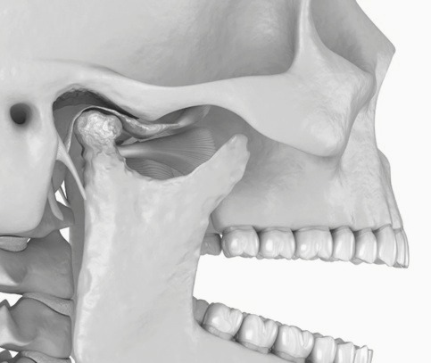
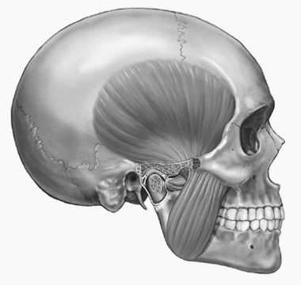
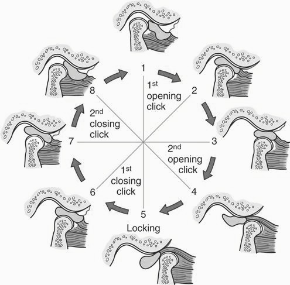
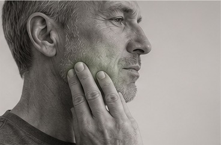
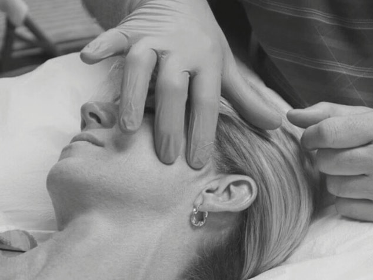

Misschien herkent u zichzelf
Kaakpijn
Pijn rond het oor, de slaap, wang of kaak tijdens kauwen, praten of gapen.
Klikken of knappen
Een hoorbaar of voelbaar geluid bij openen of sluiten, soms zonder pijn.
Stijfheid of blokkeren
Moeite om de mond volledig te openen of een gevoel dat de kaak tijdelijk vastzit.
Hoofdpijn en spanning
Spanning in slaap, gezicht, nek of schouders, soms samen met klemmen of knarsen.
TMJ is de naam van het kaakgewricht. TMD is de verzamelnaam voor klachten van het gewricht, de kauwspieren en aanverwante structuren.
Het kaakgewricht en de kauwspieren werken als één systeem
Het kaakgewricht ligt vóór het oor en bevat een gewrichtsschijf die beweging begeleidt. De kauwspieren sturen openen, sluiten en zijwaartse bewegingen. Klachten kunnen uit het gewricht, de spieren of een combinatie van beide komen.

Gewrichtsgerelateerde klachten
- Pijn direct vóór het oor
- Klikken, knappen of schuren
- Blokkeren of veranderde openingsroute
- Klachten bij hard of lang kauwen
Een geluid zonder pijn of functieverlies is vaak niet gevaarlijk en hoeft niet altijd behandeld te worden.

Spiergerelateerde klachten
- Drukgevoelige kauwspieren
- Vermoeidheid tijdens kauwen of praten
- Pijn in wang, slaap of kaakrand
- Invloed van stress, slaap en klemgedrag
Spierpijn kan naar tanden, oor, hoofd of nek worden verwezen zonder dat daar schade aanwezig is.
Wat gebeurt er wanneer de kaak klikt?
Een klik ontstaat vaak doordat de gewrichtsschijf tijdens openen en sluiten van positie verandert. Dit wordt soms een discusverplaatsing met reductie genoemd. Een klik alleen is meestal geen reden tot zorgen.
Beoordeling is belangrijker wanneer:
- het klikken pijnlijk is;
- de mondopening duidelijk beperkt raakt;
- de kaak regelmatig blokkeert;
- de beet plotseling verandert;
- de klacht na trauma is ontstaan.

Een klik betekent niet automatisch dat het gewricht beschadigd raakt.
We behandelen niet het geluid zelf, maar pijn, bewegingsbeperking, blokkeren en de invloed op eten, praten, slapen of dagelijks functioneren.
Wanneer de kauwspieren overbelast raken

Klemmen en tandenknarsen kunnen de kauwspieren extra belasten. Niet iedereen die knarst krijgt klachten, maar langdurige spierspanning kan bijdragen aan kaakpijn, slaaphoofdpijn, vermoeidheid en nekklachten.
- pijn of stijfheid bij het wakker worden;
- gevoelige slaap- of kauwspieren;
- hoofdpijn die samenhangt met klemmen;
- tanden op elkaar houden tijdens concentratie of stress;
- kaak- en nekklachten die tegelijk fluctueren.
Bruxisme kan de kaak extra belasten
Tandenknarsen of klemmen is niet bij iedereen pijnlijk. Wanneer het samengaat met ochtendstijfheid, gevoelige kauwspieren of hoofdpijn, nemen we het mee in het totale belastingspatroon.

Hoe onderzoeken wij uw kaak?
- 01
We luisteren
We bespreken pijn, klikken, blokkeren, kauwen, slaap, stress, tandheelkundige voorgeschiedenis en uw doelen.
- 02
We onderzoeken
We beoordelen mondopening, bewegingsroute, gewrichtsgeluiden, kauwspieren, nekfunctie en relevante neurologische signalen.
- 03
We leggen uit
U krijgt een begrijpelijke werkdiagnose en uitleg over wat geruststellend is en wat we blijven volgen.
- 04
We maken samen een plan
Het plan sluit aan bij eten, praten, werk, slaap en wat u weer zonder zorgen wilt kunnen doen.
Hoe kunnen we u helpen?
Bij de meeste kaakklachten beginnen we met omkeerbare, laag-risico behandelingen. De combinatie hangt af van uw klachtenpatroon.
Uitleg en zelfmanagement
Tijdelijke aanpassing van kauwbelasting, warmte, ontspanning en het herkennen van klemgedrag.
Gerichte oefeningen
Oefeningen voor gecontroleerd openen, coördinatie, mobiliteit en belastbaarheid van de kauwspieren.
Hands-on behandeling
Mobilisaties en spierbehandeling van kaak, gezicht en nek wanneer dit past bij het onderzoek.
Dry needling
Kan als aanvullende techniek worden gebruikt bij relevante triggerpoints; nooit als enige behandeling.
Nek- en schouderaanpak
Wanneer nekfunctie en kaakklachten elkaar beïnvloeden, behandelen we het volledige patroon.
Samenwerking
Waar nodig stemmen we af met tandarts, huisarts, kaakchirurg of andere zorgverleners.

Dry needling bij kaakspieren
Dry needling kan tijdelijk pijn en spierspanning verminderen wanneer overbelaste kauwspieren duidelijk bijdragen. Het wordt altijd gecombineerd met uitleg, oefeningen en aanpassing van belasting.
Wanneer is medische of tandheelkundige beoordeling nodig?
Beeldvorming is bij veel TMD-klachten niet direct nodig. Een klinisch onderzoek geeft vaak voldoende informatie om conservatief te starten. Verwijzing kan passend zijn wanneer de uitkomst het beleid verandert.
Veelgestelde vragen over kaak- en TMJ-klachten
Is klikken in mijn kaak gevaarlijk?
Meestal niet. Een klik zonder pijn, blokkeren of functieverlies hoeft vaak niet behandeld te worden.
Komt kaakpijn door stress?
Stress is zelden de enige oorzaak, maar kan klemgedrag, slaap, spierspanning en pijngevoeligheid beïnvloeden.
Heb ik een MRI nodig?
Meestal niet als eerste stap. Beeldvorming is vooral nuttig wanneer de uitslag een medische of chirurgische beslissing kan veranderen.
Helpt een bitje?
Een splint kan bij sommige mensen zinvol zijn, vooral ter bescherming van tanden of als onderdeel van een breder plan. Bespreek dit met uw tandarts.
Kan fysiotherapie helpen bij een beperkte mondopening?
Ja, afhankelijk van de oorzaak. We onderzoeken of spieren, het gewricht, pijngevoeligheid of blokkeren de beperking beïnvloeden.
Mag ik blijven kauwen en gapen?
Normaal bewegen blijft belangrijk. Tijdelijke aanpassing van harde of taaie voeding kan helpen tijdens een pijnlijke fase.
Kan kaakpijn hoofdpijn veroorzaken?
Ja. Overbelaste kauwspieren en TMD-gerelateerde hoofdpijn kunnen samen voorkomen, maar hoofdpijn heeft meerdere mogelijke oorzaken.
Hoeveel behandelingen heb ik nodig?
Dat hangt af van klachtenduur, ernst, gewrichts- of spierbetrokkenheid en uw doelen. Na het onderzoek bespreken we een realistische eerste behandelperiode.